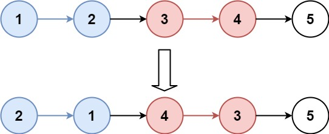
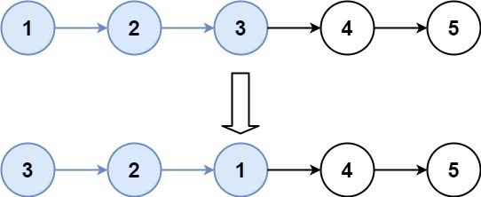

25. K 个一组翻转链表
本题学习状态正在读取学习记录…下次复习：—
按 M 快速切换薄弱标记题目与约束
给你链表的头节点 head ，每 k个节点一组进行翻转，请你返回修改后的链表。
k 是一个正整数，它的值小于或等于链表的长度。如果节点总数不是 k的整数倍，那么请将最后剩余的节点保持原有顺序。
你不能只是单纯的改变节点内部的值，而是需要实际进行节点交换。
示例 1：

输入：head = [1,2,3,4,5], k = 2
输出：[2,1,4,3,5]
示例 2：

输入：head = [1,2,3,4,5], k = 3
输出：[3,2,1,4,5]
提示：
- 链表中的节点数目为
n 1 <= k <= n <= 50000 <= Node.val <= 1000
进阶：你可以设计一个只用 O(1) 额外内存空间的算法解决此问题吗？
核心不变量
不足 k 个保持原样；先确定组尾再反转。
完整推导
思路推导
-
直觉与痛点（一锅炖的惨剧）：
很多人的直觉是一边遍历、一边数数、一边反转、一边接回原来的链表。结果写了四五十行代码，只要有一个
next指针没指对，整个链表就变成死循环或者彻底断开。 -
破局思路（分而治之，模块化）：
我们把这个复杂的操作拆解成三个极其简单的标准动作：
- 动作 A（探路）：从当前位置往前数
k个节点，找到这一组的尾巴（end）。如果数不到k个，说明剩下的不够了，直接完工下班！ - 动作 B（切割与反转）：把这
k个节点从主链表上“剪”下来，调用我们烂熟于心的标准反转链表函数，把它们翻转。 - 动作 C（无缝拼接）：把翻转后的这组节点，重新接回主链表中。
- 动作 A（探路）：从当前位置往前数
-
核心角色（四个关键指针）：
假设链表是
dummy -> 1 -> 2 -> 3 -> 4 -> 5，k = 3。我们需要这几个助手：
prev：翻转组的前驱节点（见证人）。初始在dummy。start：翻转组的第一个节点。end：翻转组的最后一个节点。nextGroup：下一组的开头节点（用来防止链表大部队走丢）。
Java 实现（满分模块化版）
C++ 实现
实现来源：经典解法实现
- 哑头节点；每组先用探针确认还有 k 个节点，不足则结束
- 组内标准三指针反转（prev/cur/next）
- 把上一组的尾部接反转后的新头，反转后的尾接下一组头
class Solution { public: ListNode* reverseKGroup(ListNode* head, int k) { ListNode dummy(0); dummy.next = head; ListNode* prevGroup = &dummy; while (true) { ListNode* probe = prevGroup; for (int i = 0; i < k && probe; i++) probe = probe->next; if (!probe) break; // 不足 k 个，结束 ListNode* groupHead = prevGroup->next; ListNode* cur = groupHead->next; for (int i = 1; i < k; i++) { // 组内头插反转 ListNode* next = cur->next; cur->next = prevGroup->next; prevGroup->next = cur; cur = next; } groupHead->next = cur; // 反转后的尾接下一组头 prevGroup = groupHead; } return dummy.next; } };Python 实现
实现来源：经典解法实现
- 哑头节点；每组先用探针确认还有 k 个节点，不足则结束
- 组内标准三指针反转（prev/cur/next）
- 把上一组的尾部接反转后的新头，反转后的尾接下一组头
class Solution: def reverseKGroup(self, head: ListNode, k: int) -> ListNode: dummy = ListNode(0, head) prev_group = dummy while True: probe = prev_group for _ in range(k): probe = probe.next if probe else None if not probe: break if not probe: break # 不足 k 个，结束 group_head = prev_group.next cur = group_head.next for _ in range(k - 1): # 组内头插反转 nxt = cur.next cur.next = prev_group.next prev_group.next = cur cur = nxt group_head.next = cur # 反转后的尾接下一组头 prev_group = group_head return dummy.nextGo 实现
实现来源：经典解法实现
- 哑头节点；每组先用探针确认还有 k 个节点，不足则结束
- 组内标准三指针反转（prev/cur/next）
- 把上一组的尾部接反转后的新头，反转后的尾接下一组头
func reverseKGroup(head *ListNode, k int) *ListNode { dummy := &ListNode{Next: head} prevGroup := dummy for { probe := prevGroup for i := 0; i < k && probe != nil; i++ { probe = probe.Next } if probe == nil { break } groupHead := prevGroup.Next cur := groupHead.Next for i := 1; i < k; i++ { // 组内头插反转 nxt := cur.Next cur.Next = prevGroup.Next prevGroup.Next = cur cur = nxt } groupHead.Next = cur prevGroup = groupHead } return dummy.Next }C 实现
实现来源：经典解法实现
- 哑头节点；每组先用探针确认还有 k 个节点，不足则结束
- 组内标准三指针反转（prev/cur/next）
- 把上一组的尾部接反转后的新头，反转后的尾接下一组头
struct ListNode* reverseKGroup(struct ListNode* head, int k) { struct ListNode dummy; dummy.next = head; struct ListNode* prevGroup = &dummy; while (1) { struct ListNode* probe = prevGroup; for (int i = 0; i < k && probe; i++) probe = probe->next; if (!probe) break; struct ListNode* groupHead = prevGroup->next; struct ListNode* cur = groupHead->next; for (int i = 1; i < k; i++) { struct ListNode* nxt = cur->next; cur->next = prevGroup->next; prevGroup->next = cur; cur = nxt; } groupHead->next = cur; prevGroup = groupHead; } return dummy.next; }
/**
* Definition for singly-linked list.
* public class ListNode {
* int val;
* ListNode next;
* ListNode() {}
* ListNode(int val) { this.val = val; }
* ListNode(int val, ListNode next) { this.val = val; this.next = next; }
* }
*/
class Solution {
public ListNode reverseKGroup(ListNode head, int k) {
// 1. 虚拟头节点，永远的救星
ListNode dummy = new ListNode(-1);
dummy.next = head;
// prev 永远指向即将翻转的那一组节点的前面那个节点
ListNode prev = dummy;
// end 用来去探路，找每一组的尾巴
ListNode end = dummy;
while (end.next != null) {
// 2. 动作 A：end 指针探路，往前走 k 步
for (int i = 0; i < k && end != null; i++) {
end = end.next;
}
// 如果 end 变成 null，说明剩下的节点不够 k 个了，直接跳出循环，保持原样
if (end == null) break;
// 3. 记录切口位置
ListNode start = prev.next; // 这组的开头
ListNode nextGroup = end.next; // 大部队的开头（下一组）
// 4. 动作 B：挥刀斩断！把这一组单独切下来
end.next = null;
// 5. 动作 C：调用反转函数，并把翻转后的新车头接回 prev 后面
prev.next = reverse(start);
// 6. 此时原先的 start 变成了这组的尾巴，让它接上大部队
start.next = nextGroup;
// 7. 指针全员推进，准备进行下一组的翻转
prev = start;
end = prev;
}
return dummy.next;
}
// 独立出来的子模块：最纯粹的反转链表代码 (206题源码)
private ListNode reverse(ListNode head) {
ListNode pre = null;
ListNode curr = head;
while (curr != null) {
ListNode next = curr.next;
curr.next = pre;
pre = curr;
curr = next;
}
return pre;
}
}
复杂度
- 时间复杂度：O(N)。
end指针遍历了一遍链表（O(N)），reverse函数又把大部分节点遍历了一遍（O(N)）。总体大概是走了 2N 步，依然属于常数级别的线性时间。 - 空间复杂度：O(1)。全程只用了几个变量做指针的改变。
易错点与扩展
- 面试考官的微表情：
- 如果你把所有逻辑都揉在一个超大的
while循环里，面试官即使看到你运行通过了，眉头也会皱起来，觉得你的代码“不可维护、工程性极差”。 - 但如果你像我上面一样，把reverse单独抽出一个私有方法，面试官的眼睛一定会亮一下。这就是“面试代码品味”的体现！ - 致命踩坑点：
end指针的重置 - 在每一轮的末尾（第 7 步），一定要把end重置到prev的位置（end = prev）。很多人容易忘写这句，导致end依然停留在已经被翻转过的节点上，下一轮探路直接原地爆炸。